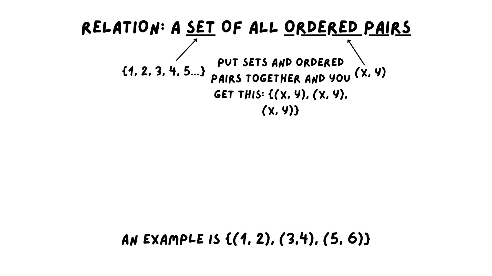
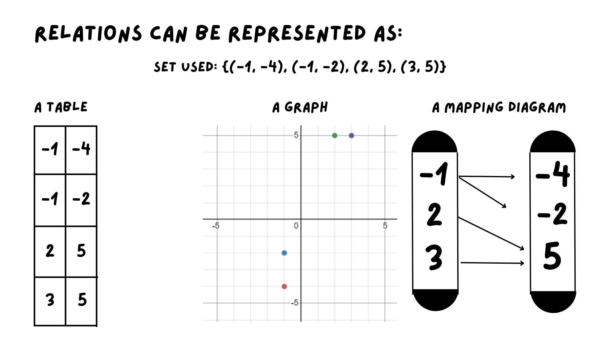
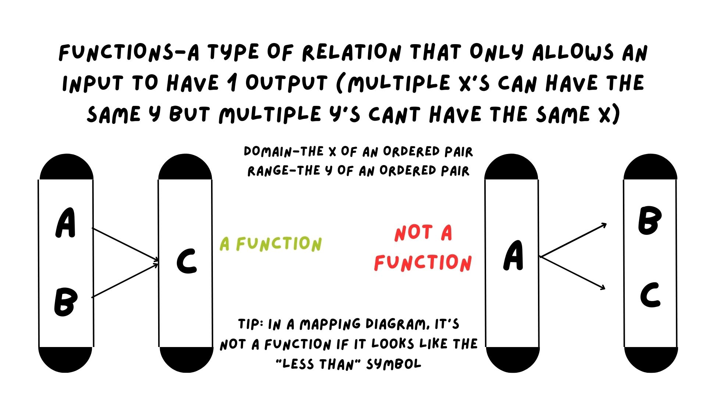
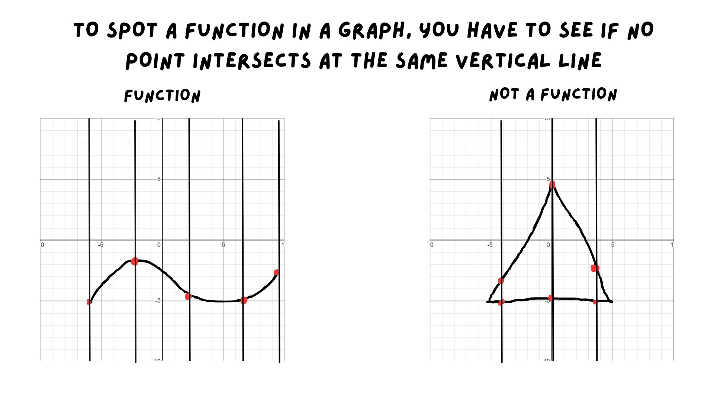
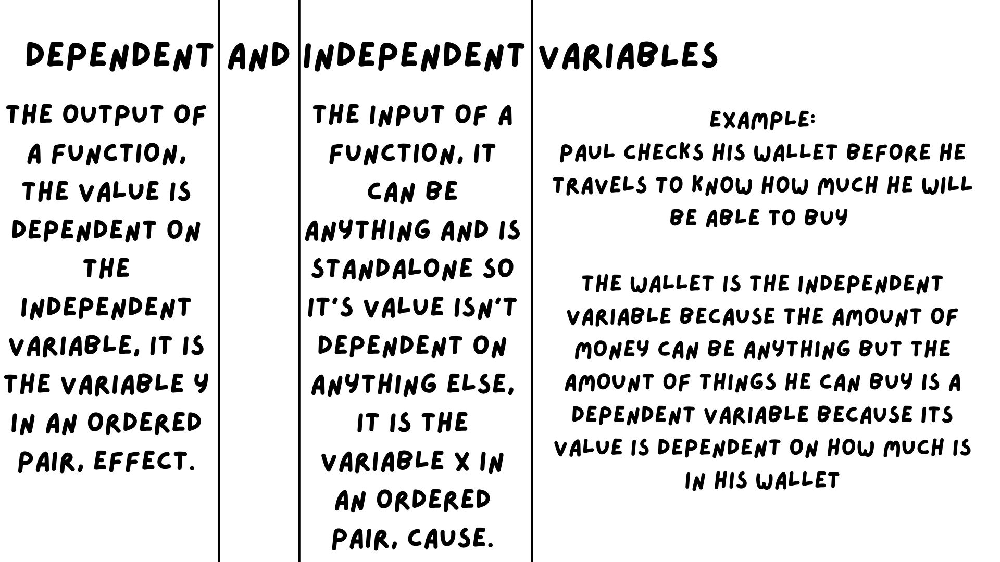
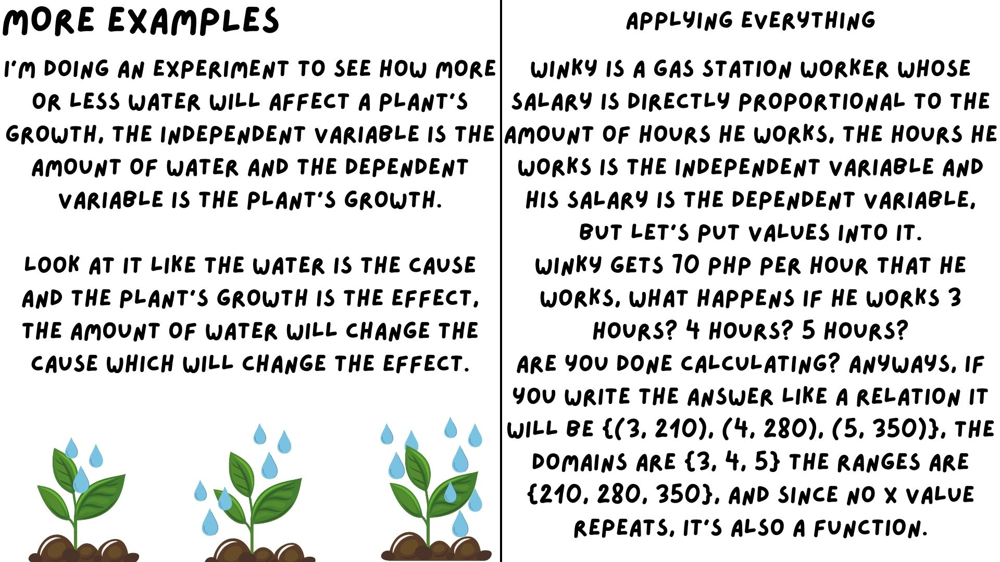
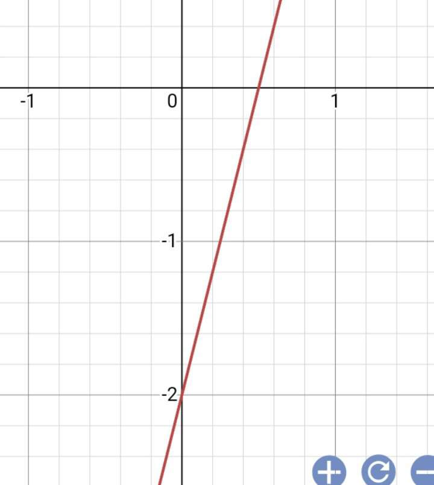

HELLO!

We are Paulina Beatrice C. Catilo and Joel Dre B. Santos here to present our website in our integrated performance task for ICT and MATHEMATICS
We will discuss Relations and Functions, Independent and Dependent Variables, Domain and Range, and Graph of Linear Functions, just continue scrolling to view the lessons
FIRST TOPIC RELATIONS, FUNCTIONS, INDEPENDENT AND DEPENDENT VARIABLES
Relations, Functions, Independent and Dependent Variables
GOOD DAY, my name is Joel Dre B. Santos and i present to you, Relations, Functions, Dependent and Independent Variables.
➢ illustrates a relation and a function.
M8AL-IIc-1
➢ verifies if a given relation is a function.
M8AL-IIc-2
➢ determines dependent and independent variables.
M8AL-IIc-3
Math is usually hard for me, but this topic got me at ease, it's very simple and easy to understand, I'll be providing pictures, examples, and analogies along the way
A relation is any set of ordered pairs. The set of all x-values is called the domain of the relation. The set of all y-values is called the range of the relation.


A function is a special type of relation which describes that there should be only one output for each input or every x-value should be associated with only one y-value.


Basically if there are 2 or more points that hit each other when you draw a line upwards, then it's not a function

The Independent variable can be called the "cause" because it is what defines the Dependent variable, the "effect"

I hope that this webpage made everything in math easier and it was a pleasure to discuss this
SECOND TOPIC, DOMAIN AND RANGE PRESENTED BY PAULINA BEATRICE C. CATILO
domain- set of all x values
range- set of all y values
one to one-one element is mapped to one element
many to one-two elements from the domain are mapped to one range.
one to many-one domain is mapped to multiple elements of the range.

.png)
.png)
Quite simple right?, let's hop in on a more challenging topic then, TOPIC 3, GRAPH OF LINEAR FUNCTION
It is a line whose expression or formula is given by; y = f(x) = px + q or f(x)=mx+b. It has one independent and one dependent variable. The independent variable is x and the dependent one is y. P is the constant term or the y-intercept and is also the value of the dependent variable.
Here are some examples
| function | graph |
|---|---|
| f(x)=3x+6 |  |
| f(x)=-2x+6 | 
|
| function | graph |
| f(x)=4x-2 |  |